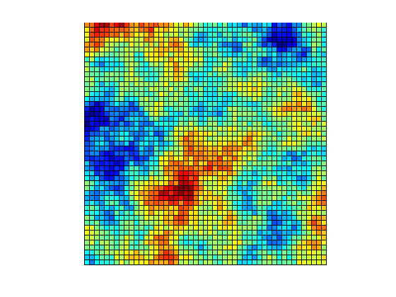
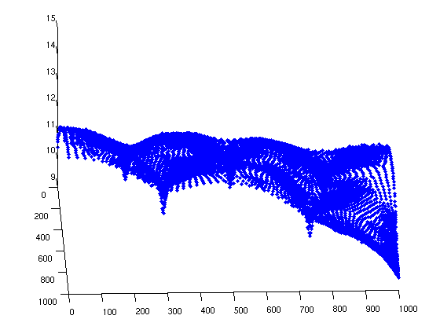

Example 2
| main | Tutorials | Functions | website |
In this example we will show how to solve the groundwater flow equation with quadratic quadrilateral elements. The hydraulic conductivity field is heterogeneous. Also we describe how to assign lateral flux boundaries.
Contents
Load data
The domain is decribed in a previous tutorial. Here we will simply load the mesh data from a .mat file:
msim_root='/home/giorgos/Documents/mSim_code/msim/'; load([msim_root 'html_help/DATA/quad_mesh.mat'])
The elements of the mesh are
Nel = size(MSH(3,1).elem.id,1)
Nel =
2154
and the nodes are
Np = size(p,1)
Np =
8745
Assign stresses
In this example we will assume a uniform groundwater recharge rate equal to 5e-4 m/day. To assign the diffuse recharge we need a structure variable with the following fields.
F_rch(1,1).id = (1:Nel)';
This contains the id of elements which are associated with diffuse recharge.
F_rch(1,1).val = 5e-4*ones(Nel,1);
For each element we assign a rate in the field val. Note that the length of id and val has to be the same.
The next three fields desribe the dimension of the elements their type and the element order. For groundwater recharge the elements are 2D, while here we use quadratic elements therefore
F_rch(1,1).dim = 2; F_rch(1,1).el_type = 'quad'; F_rch(1,1).el_order = 'quadratic_9';
The last required field is the id_el. This is actually the row in the MSH.elem structure where these elements are described. The MSH structure can have at most 4 rows, and each row has a field elem. The id_el is actually the row of the MSH.elem that contains these elements. Typically this is 1 however in 3D examples can have other values.
F_rch(1,1).id_el = 1;
The discharge boundaries on the top right corner are applied on elements. Therefore we will create a similar struct as before. However we need first to find the element ids. The discharging boundaries are described by the following lines
L=[800 1000 1000 1000;...
1000 1000 1000 800];
The matrix L holds the coordinates of the line using the format [x1 y1 x2 y2]. This is a usefull for vectorized computations using the Dist_Point_LineSegment function . For each line we find the distance between the starting and ending point of the lines of the 1D features. The element ids are those with zero distance. (Actually not zero but very close. The very close is always relative to the mesh size, here we define "very close" everything less than 1m). The elements associated with the discharging boundaries are 1D quadratic lines.
for ii = 1:size(L,1) dst_str=Dist_Point_LineSegment(p(MSH(2,1).elem(1,1).id(:,1),1),... p(MSH(2,1).elem(1,1).id(:,1),2),L(ii,:)); dst_end=Dist_Point_LineSegment(p(MSH(2,1).elem(1,1).id(:,2),1),... p(MSH(2,1).elem(1,1).id(:,2),2),L(ii,:)); F_dis(ii,1).id = find(dst_str<1 & dst_end<1); F_dis(ii,1).val = -0.1*ones(length(F_dis(ii,1).id),1);%Units must be L^3/L^2 F_dis(ii,1).dim = 1; F_dis(ii,1).el_type = 'line'; F_dis(ii,1).el_order = 'quadratic'; F_dis(ii,1).id_el = 1; end
Note here that we defined the element order as quadratic and not quadratic_9. This is because in quadrilaterals we can have quadratic with 8 deegres of freedom or 9 dofs. However only quadrilaterals with 9 dofs are currently supported.
Last type of stresses in this example are the wells. Their coordinates are
xw=[255 750 413 758 261]; yw=[802 738 514 293 192];
and they are defined on elements. First we find the element id that contains each well by using the find_elem_id_point function
id = find_elem_id_point(p,MSH(3,1).elem.id,[xw' yw'], 10);
and last we compute the area of the elements because we need to define the rates in L^3/L^2/day
A = Calc_Area(p,MSH(3,1).elem(1,1).id); F_wll(1,1).id = id; F_wll(1,1).val = -50./A(id); F_wll(1,1).dim = 2; F_wll(1,1).el_type = 'quad'; F_wll(1,1).el_order = 'quadratic_9'; F_wll(1,1).id_el = 1;
Hydraulic conductivity
In this example we will use an heterogeneous random field for hydraulic conductivity. We will load the data and then interpolate the conductivity to the nodes. Lets also use an anisotropy ratio Kx/Ky = 10. Keep in mind that the tutorials are not based on real examples but only used for demonstration.
load([msim_root 'html_help/DATA/Kfield.mat']) x_k=linspace(0,1000,size(Kfield,2)); % This is used to put the Kfield to the map y_k=linspace(0,1000,size(Kfield,1)); %same as above. surf(x_k, y_k, Kfield) view(0,90) axis equal axis off
Interpolation can be very easy in matlab if the data are properly formatted as in this example. Here we will use the interp2 function. We also set the Ky ten times less than the Kx. Note that the hydraulic conductivity matrix has 2 columns. This is how we tell mSim that the aquifer is anisotropic.
Kx=interp2(x_k,y_k,Kfield,p(:,1),p(:,2))*1; Ky=Kx/10; K=[Kx Ky];
Boundary conditions
Before we assemble the system we need to define the constant head and general head boundary conditions. Here we will set General head boundary conditions on the left side of the aquifer only. Since we don't have constant head we will pass an empty variable and define only the GHB. Note that if we dont define CH and GHB the system will be singular and cannot be solved because the solution is not unique.
CH=[]; id=find(abs(p(:,1)<1)); GHB=[id 10*ones(length(id),1) 10*ones(length(id),1)];
Assemble
Now we are ready to assemble the LHS matrix
simopt.dim=2; simopt.el_type = 'quad'; simopt.el_order = 'quadratic_9'; [Kglo H]= Assemble_LHS(p, MSH(3,1).elem(1,1).id, K, CH, GHB, simopt);
Finally we will assemble the RHS. In general we could have define one struct variable with as many rows as needed and run the following function only once. However we choose to run separately to compare the numerical integration with the actual value.
F_r= Assemble_RHS(length(H),p, MSH,F_rch); err = sum(F_r) - 1000*1000*5e-4
err = -0.7886
F_d = Assemble_RHS(length(H),p, MSH,F_dis); err = sum(F_d) - (200*-0.1+200*-0.1)
err = 7.1054e-15
F_w = Assemble_RHS(length(H),p, MSH,F_wll); err = sum(F_w) - (-50*5)
err =
2.5887
Solve
Now we are ready to solve the system
H=solve_system(Kglo,H,F_r+F_d+F_w);
In Matlab it is not possible to visualize a mesh with quadratic quadrilateral elements. However if we want to get an idea of the solution we can plot the nodes in 3D using hydraulic head as z coordinate.
plot3(p(:,1), p(:,2), H(1:Np),'.')
view(88,34)
 To view the solution we can used paraview. Because hydraulic conductivity is heterogeneous we will write the conductivity data in the same file. For each property we want to visualize in paraview we need to create a row in a struct variable
propND(1,1).name = 'head'; propND(1,1).val = H(1:Np); %Note that we do not write the extra GHB nodes propND(1,1).type = 'scalars'; propND(2,1).name = 'CondX'; propND(2,1).val = Kx; propND(2,1).type = 'scalars'; propND(3,1).name = 'CondY'; propND(3,1).val = Ky; propND(3,1).type = 'scalars';
Although this is a 2D example we will also pass the hydraulic head as node elevation by setting the node coordinates as [p(:,1:2) H(1:Np)]
WriteVtkMesh('simple_quad_sol', MSH(3,1).elem(1,1).id, [p(:,1:2) H(1:Np)], propND, [], 'quad')
Writing Nodes coord... Writing Elements... Writing head... Writing CondX... Writing CondY...